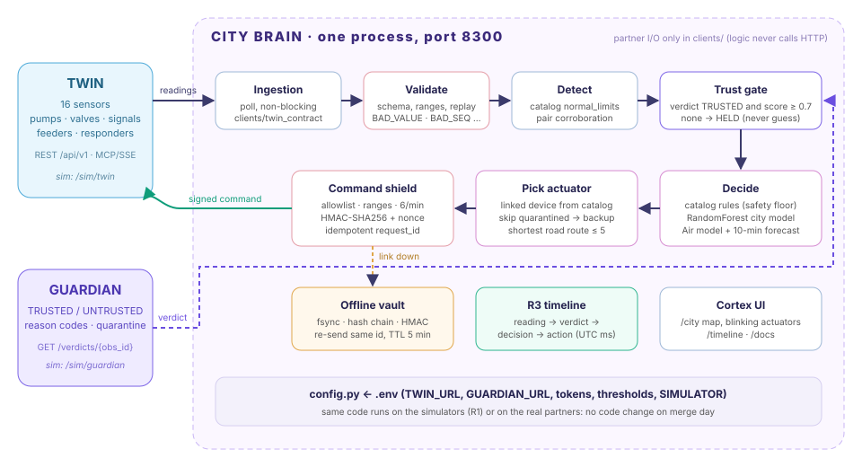

The triplet is a small city in three layers. The Twin simulates it: 16 sensors in five zones (Port, Industrial, Downtown, Residential, Hospital) and the devices that act on it. The Guardian watches every reading and says whether it can be trusted. The City Brain is the decision maker: it turns trusted readings into commands for the Twin's actuators.
PRT-WLV-01 = 82.75 cmTRUSTED, score 1.0PRT-PMP-01 start; the pump blinks on the mapAll three teams follow one rule: no reading drives an actuator unless the Guardian trusts it. When the Guardian is silent, the Brain waits (HELD). It never guesses. When the link to the Twin breaks after a decision, the decision is sealed on disk and sent later, so it is never lost. Each step is stamped in UTC on a shared timeline (R3), which lets the jury follow one incident across the three layers.
The Brain answers one question many times per second: "Given what the city reports, and what the Guardian trusts, which device should do what, now?" Its goals, in priority order:

clients/ talks to partners, and every address and secret comes from .env. For R1 the Twin and Guardian simulators are mounted inside the same process.Every second the Brain polls the Twin's GET /api/v1/sensors and validates each row first (schema, types, finite values, sequence, timestamp). A malformed row is refused with a clear code and never reaches the decision logic. Valid readings are compared with that sensor's own normal_limits from the Twin catalog (for example PRT-WLV-01: 20–80 cm; PM2.5: 0–35 µg/m³). A breach becomes an incident (flood, overheat, congestion, air pollution, pressure or flow fault) with a correlation id of the form run:sensor:seq. Redundant pairs, such as the two port water sensors, are corroborated: one incident and one response, not two. The incident is claimed before any network call, so two readings cannot both start a pump.
| Layer | What it does | Numbers |
|---|---|---|
| Catalog rules | Map each incident type to a response family (flood → pumps, overheat → coolant valve, congestion → priority corridor). The rules are always computed, and they win whenever the model disagrees in the unsafe direction (for example the model says "no action" while a limit is broken). | One rule per incident type, taken from the Twin catalog |
| City model (RandomForest) | 16 features: sensor family, normalised value, trend, zone, hour, recent incidents. It predicts the action family and a confidence. It is used only when the confidence is at least 0.6 and the model agrees with the rule family; otherwise it is logged as a note. | Values mapped onto the model scale with each sensor's catalog limits |
| Air model (new) | Classifier no_action / health_advisory / curtail_industry plus a GradientBoosting 10-minute PM2.5 forecast. It was trained on the Twin's own PM2.5 equation (next = 10 + (prev−10)/1.01 + source + plant). | 106,200 samples · 98.1 % accuracy · forecast MAE 4.1 µg/m³ |
| Trust gate | The Brain asks GET /verdicts/{observation_id}. It acts only on TRUSTED with a score of at least 0.7. UNTRUSTED → DISCARDED and the backup sensor is used. No answer → HELD, with nothing queued. | Verdicts are looked up in parallel and never block the poll loop |
GUARDIAN_RESTRICTED), are skipped, and the backup is used instead (PRT-PMP-01 → PRT-PMP-02).F-IND, which cuts PLANT-01. The hospital feeder F-ESS is never touched. Downtown haze only gets an advisory, because there is no plant there to cut.Every command carries a deterministic request_id, which is a hash of the incident, device, command and parameters. A re-send therefore can never double-apply, and the Twin answers IDEMPOTENCY_CONFLICT instead.
If the Twin cannot be reached after a decision, the commands are written to data/offline/pending_decisions.jsonl. Each record is flushed and fsync-ed, chained to the previous record's hash and sealed with HMAC. When the link returns, the poller re-sends them with the same request ids and marks them SENT. Decisions older than 5 minutes, or whose incident has cleared, become EXPIRED instead of acting on a stale situation. A restart rebuilds the queue from disk, and editing the file breaks the chain, so tampering is detected (scenario NET-01).
| Choice | Why |
|---|---|
| Python 3.12, FastAPI, Uvicorn | Async I/O suits one loop that polls the Twin while many verdict lookups run. It also gives OpenAPI docs (/docs) for partners at no extra cost. |
| httpx (REST), MCP client (SSE) | The Twin offers both REST and MCP; the transport is a setting (TWIN_TRANSPORT). Both are standard protocols, so there is no custom socket code. |
| Pydantic and pydantic-settings | Typed messages and a single config.py read from .env. No address or token is hard-coded in the logic. |
| scikit-learn (RandomForest, GradientBoosting), joblib | Small, explainable models with confidence scores that load in milliseconds on a laptop, with no GPU. Training scripts are in scripts/. |
| JSONL with HMAC-SHA256 hash chain | The offline vault stays readable by a person, survives a crash (fsync) and shows any edit. It needs no database server. |
| Vanilla HTML/JS on the Twin's own map SVG | The Cortex and timeline screens need no build step. Sharing the Twin's map artwork and anchors keeps every sensor at the same coordinates. |
| pytest, ruff, GitHub Actions, Docker | Each push runs lint, 74 tests and all 13 scenarios, and uploads their logs. docker compose up brain runs the layer alone. |
Postgres and Redis from the original repository are still supported (audit log, Redis stream ingestion), but they are optional. The Brain runs without them.
The full Interface Card is brain/INTERFACE.md (one page). In summary:
| Direction | Partner | Endpoint and message |
|---|---|---|
| In | Twin readings | GET /api/v1/sensors (MCP get_sensor_readings): {sensor_id, type, reported_value, unit, zone_id, seq, timestamp} inside the {ok, run_id, data, error} envelope |
| In | Twin state | GET /api/v1/state, /events?seq=: blocked roads, device status |
| In | Guardian | GET /verdicts/{run_id[-12:]-sensor_id-seq} → {verdict, trust_score, reason_codes, recommended_action}; GET /devices/{id}/trust |
| Out | Twin actuators | POST /api/v1/commands {device_id, command, params, request_id, context{correlation_id, observation_id, guardian_verdict_id, trust_score}} |
| Out | Guardian timeline | POST /timeline/events, layer brain, so the decisions appear on the shared screen |
| Out | Everyone | GET /api/timeline?since= (R3), /api/overview, /api/vault, /health |
Pointing the Brain at a partner is configuration only: set SIMULATOR=false, then TWIN_URL, TWIN_TRANSPORT, TWIN_TOKEN_BRAIN, GUARDIAN_URL and GUARDIAN_TOKEN_BRAIN. The same binary was checked once against a real Twin MCP server: commands were APPLIED, an idempotent replay was handled, and a wrong token was refused.
X-CityBrain-* headers. The receiver rejects requests with BODY_TAMPERED, NONCE_REPLAYED, SIGNATURE_EXPIRED (more than 30 s old), SIGNATURE_INVALID or SIGNATURE_MISSING.Scenario SEC-01 tests all of this live: an out-of-range parameter, an unknown device, a tampered body, a valid command, a replay of that command and an unsigned command. Each one gets the expected code.
OPERATOR_CONFIRMED_CALL.Every scenario has one trigger (python scenarios/run.py --scenario <id>, or --all), and every run writes logs/<id>-<UTC>.log with the timestamped timeline, the decisions, the vault state and a PASS/FAIL line for each expected output. The full field-by-field cards (ID, Name, Layers involved, Description, Trigger, Expected: Twin, Expected: Guardian, Expected: Brain, How to verify) are in TESTBOOK.md. T5 and SCN-02 … SCN-06 reuse the Twin team's names and expectations.
| ID | Name | Expected: Guardian | Expected: Brain | Result |
|---|---|---|---|---|
| CALM-01 | Calm day | all TRUSTED | no incident, no command | PASS |
| T5 | Fake flood at the port | UNTRUSTED (BACKUP_DISAGREEMENT), quarantine | refuse, no pump; use backup PRT-WLV-02 | PASS |
| SCN-02 | Real flash flood | TRUSTED | start PRT-PMP-01 once, stop when normal | PASS |
| SCN-03 | Dead + frozen sensors | bad streams UNTRUSTED | ignore both, use IND-TMP-02, open IND-VLV-01 | PASS |
| SCN-04 | Quarantined pump | PRT-PMP-01 quarantined | record GUARDIAN_RESTRICTED, start PRT-PMP-02 | PASS |
| SCN-05 | Accident + spoofed air alarm | traffic TRUSTED, spoof OUT_OF_RANGE | priority corridor DTN-TLT-01, refuse the spoof | PASS |
| SCN-06 | Guardian outage | no answer for 30 s | HELD, nothing queued; act when back | PASS |
| AIR-01 | Industrial smog | TRUSTED | model: curtail_industry, open F-IND, never F-ESS | PASS |
| AIR-02 | Downtown haze | TRUSTED | advisory only, no curtailment | PASS |
| NET-01 | Link lost after deciding | TRUSTED | SAVED_OFFLINE → re-sent same id → SENT, chain intact | PASS |
| SEC-01 | Command shield attacks | n/a | block bad params/devices; 401 tamper, replay, unsigned | PASS |
| INP-01 | Malformed partner input | skips them | refuse 5 rows with clear codes, keep running | PASS |
| EMG-01 | Emergency call | n/a (operator) | AMB-01 + POL-01 via R-LOW → R-IND, then release | PASS |
| UTC | Stage · layer | Event |
|---|---|---|
| 21:08:11.710 | reading · twin | PRT-WLV-01 = 82.75 cm (normal [20, 80]) |
| 21:08:13.008 | verdict · guardian | TRUSTED score 1.00 |
| 21:08:13.042 | decision · brain | act on flood at PRT-WLV-01: PRT-PMP-01 start (model 0.81) |
| 21:08:13.137 | action · twin | PRT-PMP-01 start {speed_pct: 100} APPLIED |
| 21:08:24.494 | action · twin | recovery: PRT-PMP-01 stop APPLIED |
Measured across all logs: the median time from decision to applied action is about 0.1 s, and from reading to action about 1.4 s, most of which is waiting for the Guardian's verdict. The simulators run at 4 ticks per second for the logs; --speed 1.0 runs in real time.